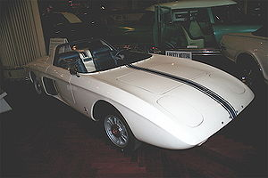

Ford Mustang — культовый автомобиль класса Pony Car производства Ford Motor Company. На автомобиле размещается не эмблема Ford, а специальная эмблема Mustang. Изначальный вариант 11233 (1964/65—1973 гг.) был создан на базе агрегатов семейного седана Ford Falcon (создатель Ли Якокка и его команда). Первый серийный Mustang сошёл с конвейера 9 марта 1964 года как модель 1965 года (в среде коллекционеров относительно Mustang выпуска до осени 1964 года
17 апреля автомобиль был представлен публике в Нью-Йорке, а 19 апреля — показан по всем трём американским телевещательным сетям. Продвижение автомобиля сопровождалось активной рекламной кампанией. Это была одна из самых удачных премьер в истории автомобилестроения. 
Первый прототип автомобиля под девизом Mustang (1962 год) представлял собой двухместный среднемоторный родстер в духе европейских спорткаров тех лет с крайне необычным, футуристичным дизайном. Это повлияло на выбор концепции нового автомобиля, в результате Mustang стал четырёх-пятиместным купе «классической» компоновки на модифицированном шасси Falcon. А от среднемоторного концепта автомобиль унаследовал лишь воздухозаборники позади дверей, которые, естественно, уже были фальшивыми. Прототип был построен в 1963 году и имел намного более смелый дизайн, чем последовавшая серийная модель.
Имя автомобиля тоже родилось не сразу. Изначально он разрабатывался как Special Falcon. Позднее предлагались такие названия, как: Cougar — это имя было предложено дизайнером автомобиля Д. Оросом; Torino; T-Bird II — предложенное Генри Фордом Вторым в честь уже выпускавшегося Ford Thunderbird; Bronco, Puma, Cheetah, Colt и другие. Многие из не использованных названий позднее были присвоены иным автомобилям фирмы.